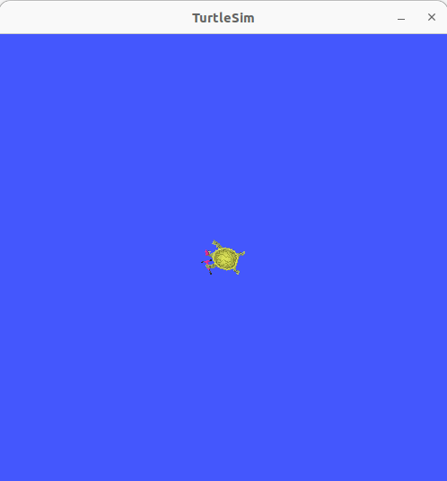

IoT Lab Lecture 4 - 10/04/2023
In this lecture of ROS we will see how to implement custom interfaces for your topics and services! Additionally, we will also see how you can write
a launch file so that you don't have to start every time every single ROS node!
Let's get to it!
Creating your own Interfaces
If you paid attention to the code carefully, you may have noticed that the code we wrote for the service in the last lecture is using a message of type
AddTwoInts. In order to be able to comfortably work with ROS, you may be
required to be able to implement custom messages to pass to your services and topics. This is what we are going to cover in this part!
We will use the same workspace we used so far to test our new interface, so just go back to your
src folder and type:
ros2 pkg create --build-type ament_cmake tutorial_interfaces
This time, we will have to use, sadly, a CMake package. There is currently no way to generate .msg and .srv files in a pure Python package.What we will do, in order to not use C++, is to define our interfaces in a separate CMake package, and then use them inside another Python package.
Interfaces should be defined in their own directories in the package folder, so, just type:
cd tutorial_interfaces
mkidr msg
mkdir srv
Open the msg folder, and create a file named Num.msg.
Just open it, and write the following line:
int64 num
And also another file called Sphere.msg with the following content:
geometry_msgs/Point center
float64 radius
Let's now try to create a srv interface!
Go back, and open the srv folder. Inside of it, create a file called AddThreeInts.srv and write in it the following lines:
int64 a
int64 b
int64 c
---
int64 sum
What we have to do now is just to link these new interfaces so that colcon is able to find them when we build our package.
In the folder of our interface package, open the file CmakeList.txt and add the following lines:
find_package(geometry_msgs REQUIRED)
find_package(rosidl_default_generators REQUIRED)
rosidl_generate_interfaces(${PROJECT_NAME}
"msg/Num.msg"
"msg/Sphere.msg"
"srv/AddThreeInts.srv"
DEPENDENCIES geometry_msgs # Add packages that above messages depend on, in this case geometry_msgs for Sphere.msg
)
All that is left now is to specify the dependencies our package relies on.In order to do that, we will have to edit the file package.xml.
Interfaces rely on rosidl_default_generators in order to generate language-specific code, so we will have to add it to our execution-stage dependencies using the tag <exec_depend>.
This package belongs to the dependency group rosidl_interface_packages, which can be defined using the tag <member_of_group>.
Additionally, we have to define our dependency to geometry_msgs.
Add the following lines to package.xml, inside the <package> tag:
<depend>geometry_msgs</depend>
<build_depend>rosidl_default_generators</build_depend>
<exec_depend>rosidl_default_runtime</exec_depend>
<member_of_group>rosidl_interface_packages</member_of_group>
Go back to the main folder of your workspace, and try to build everything like we always did.
If you now source you new package, you should be able to see your interfaces with the command:
ros2 interface show [interface_name]
Great! This completes almost everything we need to know about interfaces!If you wish to build interfaces and write Python code in the same package, you can build your package using the --build type set to ament_cmake_python.
There is currently no plan to discuss these type of packages. For the rest of the course we will mainly use different packages like we just did.
NOTE: in order for your custom interfaces to be recognized by your IDE and the autocomplete to work, you will need to start the IDE from a terminal which has your workspace sourced.
If you're using Visual Studio Code, you can simply do that by typing:
code [folder_name]
If you want to test your new interfaces, you can try to edit your service and client script we wrote before to take AddThreeInts in input. If you did the exercises before, it shouldn't be hard at all. Give it a try!Exercise 4 - Spin Turtle!
Let's have more "fun" with the turtle!
Now that we know how to write custom interfaces and use them, it is time to test them.
You are here asked to create a service which, when requested, makes the turtle spin on itself for some time.
The service should use a custom interface message, which takes in input the direction of the spin, and returns a message of your
choice as soon as the spin has started (you can use a simple string message as a response).
The turtle should do something like this, when requested by the service:

Solution will be online after the lecture!
EXTRA: What if you wanted to change the service so that it sends a response only when the rotation is over?
Topics are a continuous stream of data without an end, how would you do that?
Think about it (this extra has nothing to do with interfaces, it is given only to tinker and practice more with ROS).
Setting Parameters for your Nodes
Sometimes you may have the need to expose some properties of your nodes outside the scope of your code, maybe to allow
some customization or flexibility of the package you are developing.
This exactly what parameters are for.
Additionally, parameters can be set at launch time by defining a special ROS launch file. We will see how to do that in the next lecture.
Creating and setting parameters is pretty easy and straightforward, let's see how we can do it.
Let's create a package for an example:
ros2 pkg create --build-type ament_python python_parameters --dependencies rclpy
And let's create in the appropriate directory a new file called python_parameters_node.py.
This will be the code for our node:
import rclpy
import rclpy.node
class MinimalParam(rclpy.node.Node):
def __init__(self):
super().__init__('minimal_param_node')
self.declare_parameter('my_parameter', 'world')
self.timer = self.create_timer(1, self.timer_callback)
def timer_callback(self):
my_param = self.get_parameter('my_parameter').get_parameter_value().string_value
self.get_logger().info('Hello %s!' % my_param)
my_new_param = rclpy.parameter.Parameter(
'my_parameter',
rclpy.Parameter.Type.STRING,
'world'
)
all_new_parameters = [my_new_param]
self.set_parameters(all_new_parameters)
def main():
rclpy.init()
node = MinimalParam()
rclpy.spin(node)
if __name__ == '__main__':
main()
Let's comment this code for a little bit.
As we have previously seen before, in the __init__() function we are defining the node name, and scheduling a periodic action of the method timer_callback().
Additionally, we are defining a parameter named "my_parameter" with a value of "world" using the function declare_parameter().
In the timer_callback() method, we have two important functions that are used to interact with parameters.
One of them is get_parameter().get_parameter_value() which allows us to read parameter values and use them in the code.
The second important function is set_parameters(), which allows us to set parameters given in input to a desired value.
What this code does is, essentially, in case of an external modification of the value, resetting every second the "my_parameter" parameter to the "world" value.
You can test its execution, after linking, compiling and running it, by changing the parameter from console using the command:
ros2 param set /minimal_param_node my_parameter earth
And that's it!
Creating a Launch File
The launch system in ROS 2 is responsible for helping the user describe the configuration of their system and then execute it as described.
The configuration of the system includes what programs to run, where to run them, what arguments to pass them, and ROS-specific conventions
which make it easy to reuse components throughout the system by giving them each a different configuration.
It is also responsible for monitoring the state of the processes launched, and reporting and/or reacting to changes in the state of those processes.
If you are tired of typing every time ros2 run ... for every node you have to start, this is what you've been
waiting for.
Here is the code of a simple ROS launch file, which starts two Turtlesim applications together. You can copy this script and save it in a file called turtlesim_mimic_launch.py
from launch import LaunchDescription
from launch_ros.actions import Node
def generate_launch_description():
return LaunchDescription([
Node(
package='turtlesim',
namespace='turtlesim1',
executable='turtlesim_node',
name='sim'
),
Node(
package='turtlesim',
namespace='turtlesim2',
executable='turtlesim_node',
name='sim'
),
Node(
package='turtlesim',
executable='mimic',
name='mimic',
remappings=[
('/input/pose', '/turtlesim1/turtle1/pose'),
('/output/cmd_vel', '/turtlesim2/turtle1/cmd_vel'),
]
)
])
Understanding what this launch file does should be kind of trivial at this point, but let's comment the code for a little bit.
First of all, we have our import of the Python libraries required for writing a Python launch file.
from launch import LaunchDescription
from launch_ros.actions import Node
Then, we define our function generate_launch_description, which returns a new LaunchDescription object.
The LaunchDescription object takes in input an array of ROS2 Node, which are those which will be executed when the launch file is run.
Let's look closer to one of the Node entry.
Node(
package='turtlesim',
namespace='turtlesim1',
executable='turtlesim_node',
name='sim'
),
Here, we define, the package of the node, the namespace for the node, the executable (which is the node itself), and a name for the node.One new thing that we haven't seen before, which will be of great importance for bigger projects, is the namespace.
This allows you to run multiple nodes of the same application, and divide them in different namespaces.
From the full code of the launch file you may see how two turtlesim nodes are started, and created in two different namespaces.
This allows you to start multiple instances and/or nodes of the same application, without having conflicting topics.
Note that all the Node classes can be configured at any given time and then given in input to the LaunchDescription object. Which means that you could build your Node array dynamically before (i.e., maybe depending on some arguments given in input), and then give it to LaunchDescription.
The above launch file will launch two different turtlesim applications, which can be controlled separately.
Using the cmd_vel topic, thanks to the namespaces, we can instruct the two turtles separately.
One topic will be:
/turtlesim1/turtle1/cmd_vel
And the other:/turtlesim2/turtle1/cmd_vel
The final part of the code starts the mimic node, and with these two lines:
remappings=[
('/input/pose', '/turtlesim1/turtle1/pose'),
('/output/cmd_vel', '/turtlesim2/turtle1/cmd_vel'),
]
remaps some topics of the node to different ones. This code will link the two spawned turtles together, making one turtle "mimic" another.If you want to try the Launch file we just wrote, you can use the following command:
ros2 launch turtlesim_mimic_launch.py
Changing parameters at launch
As we anticipated in the previous lecture, launch files can also be used to configure node's parameters at run time. Doing that is very simple.
The following launch file will modify the parameter of the script we wrote in the previous lecture.
from launch import LaunchDescription
from launch_ros.actions import Node
def generate_launch_description():
return LaunchDescription([
Node(
package='python_parameters',
executable='minimal_param_node',
name='custom_minimal_param_node',
output='screen',
emulate_tty=True,
parameters=[
{'my_parameter': 'earth'}
]
)
])
The lines:
output='screen',
emulate_tty=True,
That's it. Launch files have various degree of customization, more than we need at this point, and more than we would be able to cover in a single lecture.
Feel free to take a look at the official documentation here, if you wish to customize your launcher file in a particular way.
Conclusions
That's it. This lecture might have been a little bit boring in terms of topics discussed. Implementing your own interfaces and scripting launch files is, however,
something you will have to face in order to program with ROS.
If you can't remember something from lectures like these it's ok, the ROS documentation and these lectures are here exactly for that.
In the next lecture we will cover the last part of the ROS paradigm: Actions.
See you soon!